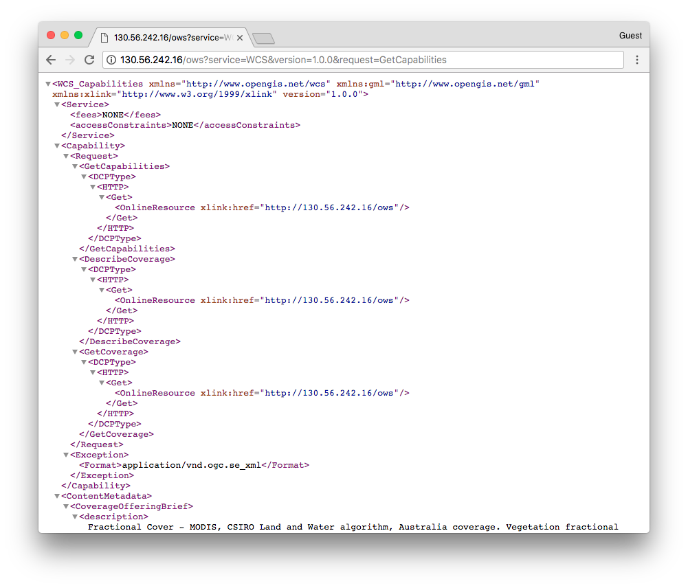
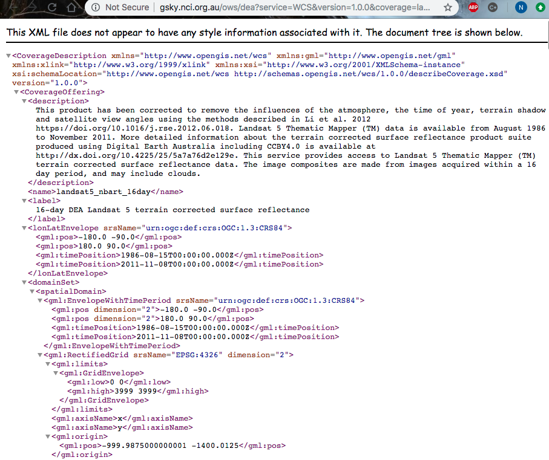

Web Coverage Services (WCS)¶
NCI’s GSKY Data Server supports the Open Geospatial Consortium (OGC) Web Coverage Service (WCS), which is a standard protocol for serving geospatial data in common formats such as NetCDF and GeoTIFF.
Constructing WCS requests¶
GSKY’s Web Coverage Service (WCS) allows users to request data or subsets of data in either NetCDF3 or GeoTIFF format. The request is made by constructing a GetCoverage URL, which is then used within a web browser to communicate to the GSKY Data Server.
For example, the GetCoverage request takes the following form:
http://gsky.nci.org.au/ows/dea?service=WCS&version=1.0.0&request=GetCoverage&coverage=value&format=value&Styles=value &bbox=value&crs=value
where red indicates required fields, blue are optional, and green are where input values relevant to the dataset and user request need to be defined.
GetCoverage parameters¶
Parameter |
Required/Optional |
Input |
|---|---|---|
service |
Required |
|
version |
Required |
|
request |
Required |
|
coverage |
Required |
|
Styles |
Required |
|
format |
Required |
|
bbox |
Required |
|
time |
Required/Optional |
|
srs, or crs |
Required/Optional |
|
* For large files and/or files with a time dimension, these might be necessary. If bbox is not defined, the entire spatial domain will be returned (if server limits allow)
and if time is not specified, either the first or sometimes the last timestep is returned.
WCS GetCapabilities and DescribeCoverage¶
Where do you find valid input values?
In order to contruct the GetCoverage URL, a GetCapabilities request can be made to the server. This requests returns an xml describing the available WCS parameters (metadata, services, and data) made available by NCI’s GSKY server. Additional metadata information can also be requested about a specific coverage layer by making a DescribeCoverage request.
GetCapabilities example:
http://gsky.nci.org.au/ows/dea?service=WCS&version=1.0.0&request=GetCapabilities
DescribeCoverage example:
GetCoverage request¶
Using the information returned from the GetCapabilities and DescribeCoverage requests, a GetMap URL can be constructed and then entered into the address bar of any web browser.
Example GetCoverage (NetCDF format)
service=WCS&coverage=landsat8_nbart_16day&crs=EPSG:4326&format=NetCDF&request=GetCoverage&height=256&width =256&version=1.0.0&bbox=147,-37,148,-35&time=2013-04-20T00:00:00.000Z&Styles=tcExample GetCoverage (GeoTIFF format)
service=WCS&coverage=landsat8_nbart_16day&crs=EPSG:4326&format=GeoTIFF&request=GetCoverage&height=256&width =256&version=1.0.0&bbox=147,-37,148,-35&time=2013-04-20T00:00:00.000Z&Styles=tc